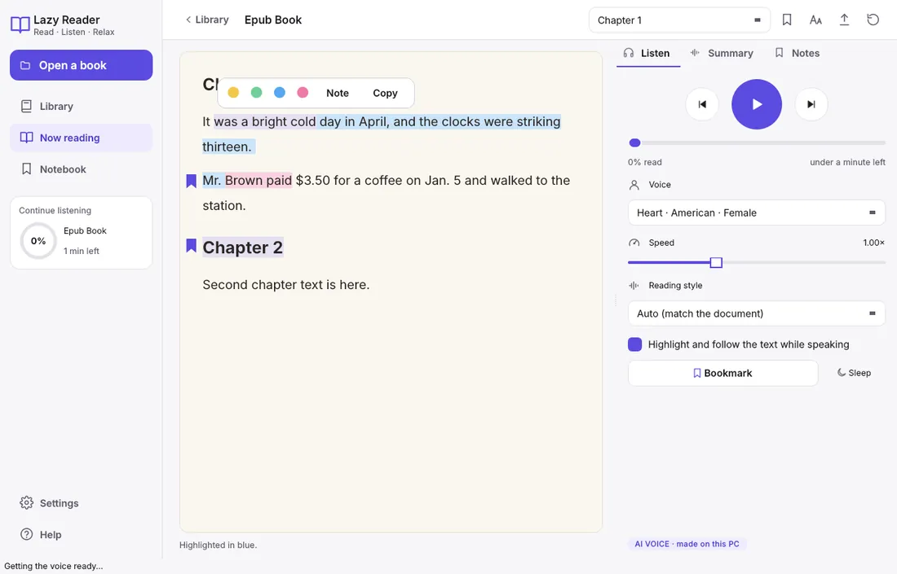
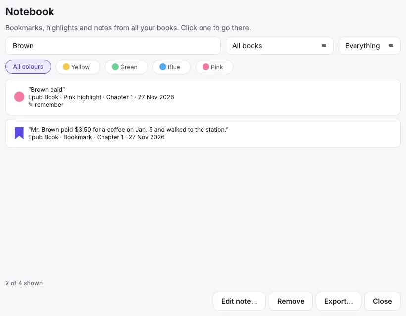
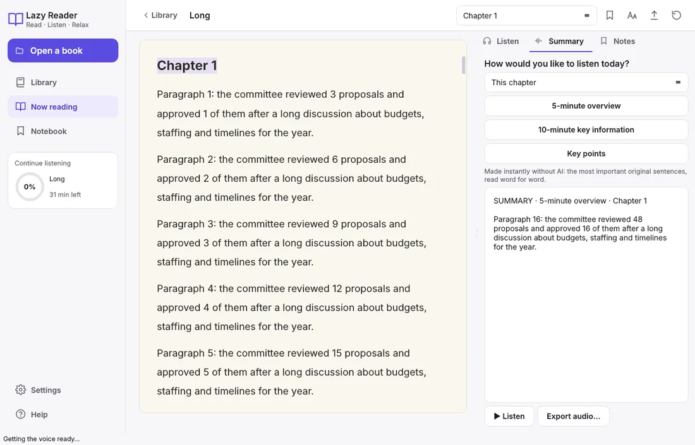
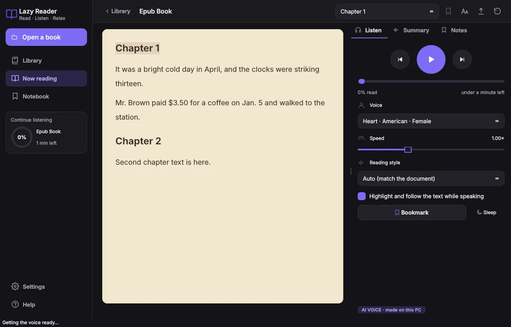

Turn any PDF into an audiobook
Natural AI voices, read-along highlighting, bookmarks, highlights and notes – works offline on your PC.
Get it fromMicrosoft StoreNatural AI voices read your documents aloud
Pick a voice, speed and reading style (Study is calmer, Presenter is livelier). The sentence being read is highlighted and the page follows you, like an audiobook with the book in front of you.

Bookmark, highlight and take notes
Press Ctrl+B to bookmark the sentence you just heard. Select words to highlight them in yellow, green, blue or pink, and add your own notes.

Every highlight in one Notebook
Search all your bookmarks, highlights and notes across books, filter by colour or book, and jump straight back to the page. Export everything as text.

Short on time? Instant summaries
Get key points, a 5-minute overview or 10-minute key information made from the document's own sentences, and listen to them.

Comfortable for long reading
Paper, Sepia, White and Night pages, a book-style layout, adjustable text size and an easy-read font with wider spacing that many readers with dyslexia prefer.
Made for students, professionals and readers with dyslexia
Turn lecture notes and textbook PDFs into audio, highlight key points and revise before exams.
Listen to reports and long documents while you commute, with summaries when time is short.
Read-along highlighting and an easy-read font help readers with dyslexia or tired eyes.
No account, no tracking. Speech is made on your PC and the app never uploads your files.
Questions
Is LazyReader ReadAloud free?
It is free to download, and all features are free for a limited time while we launch. Some advanced features will later become an optional Pro upgrade; reading your documents aloud stays free.
Does it work offline?
Yes. The natural AI voices run on your PC, so you can listen without internet once the app is installed. The app never uploads your documents.
Which files can it read aloud?
PDF, EPUB eBooks, Word (DOCX), text, Markdown and HTML files. Smart Clean skips page numbers, headers, footers and footnote marks.
Which Windows versions are supported?
Windows 10 (version 1809 or later) and Windows 11, on 64-bit PCs. 8 GB of memory is recommended.
Can I highlight and take notes?
Yes. Bookmark the sentence you just heard with Ctrl+B, highlight words in yellow, green, blue or pink, add notes, and find everything in your Notebook.
Give your eyes a rest
Free to download. All features free for a limited time.
Get it fromMicrosoft Store